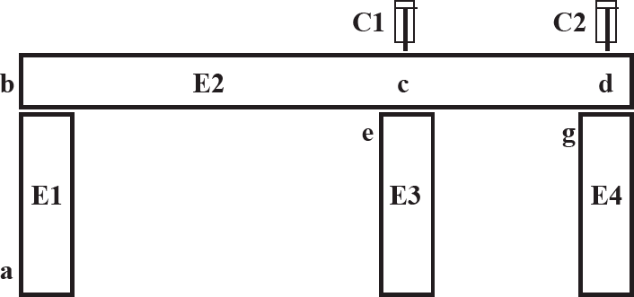
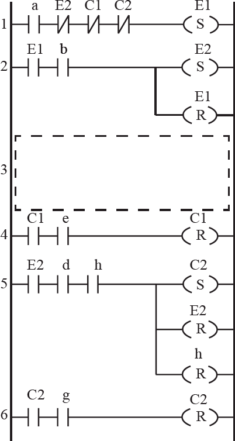

O sistema de distribuição de peças mostrado na figura I é composto por uma esteira de entrada de peças (E1), uma esteira de distribuição de peças (E2), duas esteiras de saída (E3 e E4), e dois cilindros pneumáticos de ação simples com posição de repouso recuado (C1 e C2). As esteiras de saída E3 e E4 estão sempre ligadas.
Figura I
O sistema deve funcionar de forma que as peças devem ser distribuídas para as esteiras de saída E3 e E4, alternadamente, isto é, quando uma peça é empurrada pelo cilindro C1, a próxima deve ser empurrada pelo cilindro C2, e vice-versa. A primeira peça que entra no sistema deve ser distribuída para a esteira E3. Os sinais binários do sistema são apresentados no quadro 1 e a figura II apresenta o diagrama Ladder que controla o sistema, em que a linha 3 está omitida.
Quadro 1
Figura II
Com base nas informações apresentadas, conclui-se que a linha 3 que completa o código corretamente no diagrama é